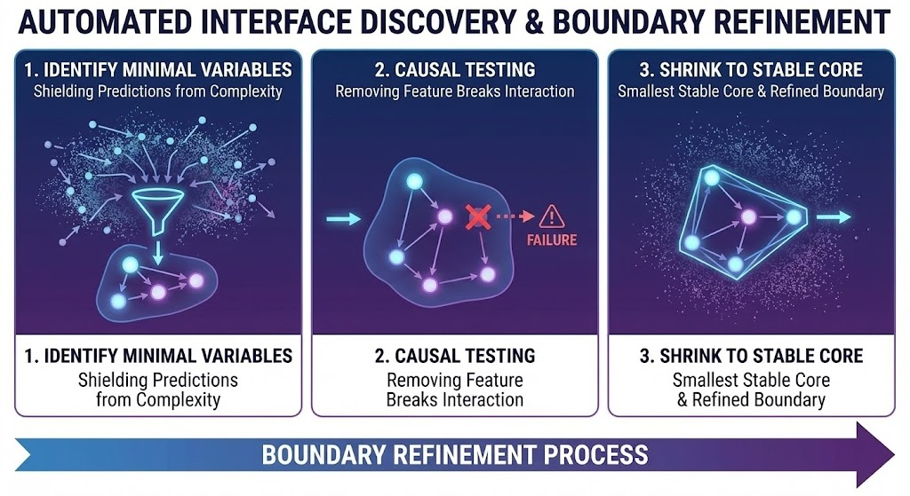
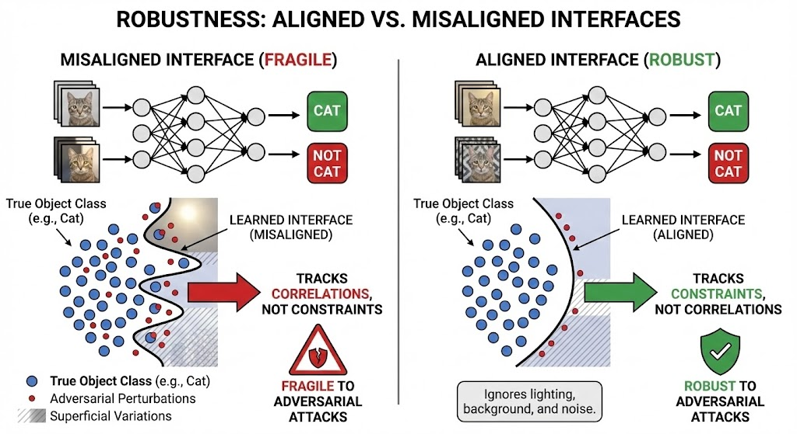
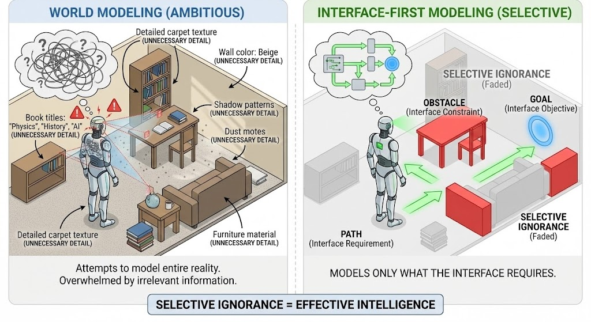

Conscious Design
Technological interfaces differ from natural interfaces in that they are consciously designed. Engineers and designers create APIs, protocols, and user interfaces with specific goals in mind. Yet, the best technological interfaces often rediscover patterns that appear naturally in biological, cognitive, and social systems.
"Technological interfaces show how we can consciously design what nature discovers."
APIs and Protocols
Application Programming Interfaces (APIs) are technological interfaces that enable different software systems to communicate. Like biological membranes, APIs create boundaries that allow selective exchange. They define what information can pass, in what format, and under what conditions.
As shown above, this shows how a car's interface shields users from complexity. You don't need to understand the engine, transmission, or electrical systems to drive a car, the interface (steering wheel, pedals, dashboard) provides everything needed for effective interaction. This demonstrates a key principle of good interface design: minimality. The interface exposes only what matters for the user's goals while hiding the underlying complexity. This same principle applies to APIs, which shield developers from implementation details while enabling effective communication between systems.
Protocols are interfaces that govern how systems interact. HTTP, TCP/IP, and other network protocols create the conditions for the internet to function as a coherent system despite its distributed nature.
User Interfaces
User interfaces are technological interfaces that bridge the gap between humans and machines. They translate human intentions into machine actions and machine states into human understanding. Good user interfaces follow the same principles as natural interfaces: they constrain interaction while enabling coordination.
Like sensorimotor interfaces in biology, user interfaces create loops between perception and action, enabling humans to effectively engage with technological systems.
Interface Design Principles
The principles that govern natural interfaces also apply to technological ones. Good interfaces are minimal, shielding complexity while exposing what matters. They are stable under change, maintaining coherence as systems evolve. They enable coordination by constraining interaction in productive ways.
As shown above, this shows how AI systems can discover interfaces automatically, just as nature discovers them through evolution. Rather than designing interfaces from scratch, we can create systems that explore possibility space and discover effective interfaces through interaction. This demonstrates that the principles of interface design aren't just human inventions, they're patterns that can be discovered by any system that explores how to coordinate effectively. Automated interface discovery shows how technology can rediscover what nature has already found.
As shown above, this shows robustness as interface alignment. A system is robust when its interfaces are well-aligned with the constraints of the environment and other systems. When interfaces align, coordination becomes easier and systems become more resilient to change. Misalignment creates fragility, systems break when their interfaces don't match the constraints they need to respect. Robustness emerges from good interface design, not from building systems that are resistant to all possible changes.
As shown above, this contrasts two approaches to system design. World modeling tries to build complete models of the environment, which becomes increasingly complex and brittle as the world changes. Interface-first modeling focuses on designing effective interfaces that enable coordination without requiring complete world models. This approach is more robust because interfaces can remain stable even as the underlying systems evolve. The interface-first approach recognizes that we don't need to model everything, we just need interfaces that enable effective interaction.
Key Concepts
- APIs: Interfaces that enable software systems to communicate
- Protocols: Interfaces that govern system interaction
- User Interfaces: Interfaces that bridge humans and machines
- Conscious Design: Explicit creation of interfaces
- Interface Principles: Minimality, stability, coordination
- Engineered Systems: Complex systems enabled by designed interfaces
Building on All Previous Layers
Technological interfaces build upon all previous layers. They rely on physical interfaces for stability, biological interfaces for inspiration, cognitive interfaces for usability, semantic interfaces for meaning, and social interfaces for coordination. They show how the principles discovered by nature can be consciously applied to create new possibilities.